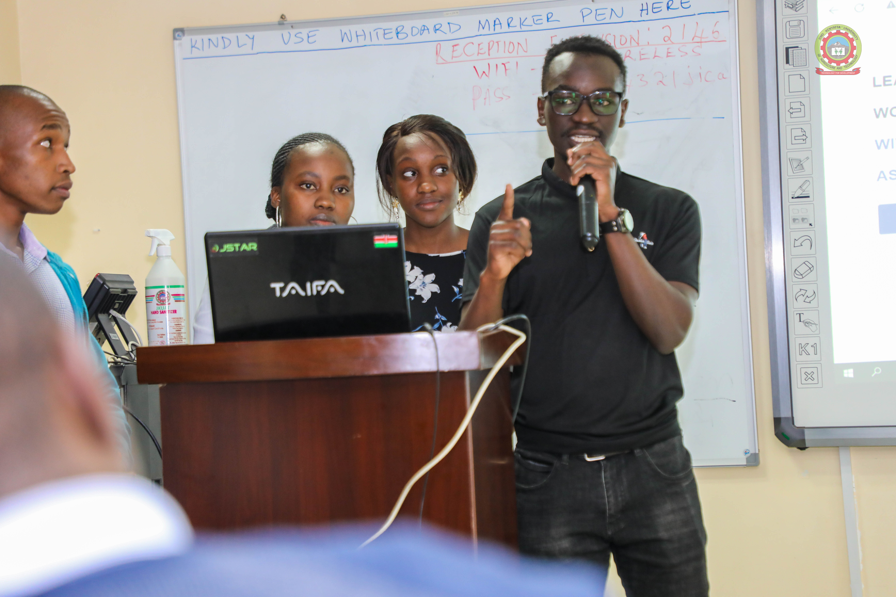

Ayah Austine
Experienced Data analyst, Software developer, Educator, Researcher, and Administrator with almost five years of experience, and a passion for delivering insights based on highly responsive websites, data analytics and predictive modelling.
üëâ austine.access@gmail.com
Data Science stack
Python, R, SPSS, SAS, Stata, Minitab
SQL, Pandas, Numpy
Scikit-learn
RandonForest, XGBoost, DecisionTreeClassifier, RegressionModels
TensorFlow, Keras
R-shiny, Heroku, AWS, Streamlit, Gradio
Tech stack
Python, JavaScript, NodeJS
Django, Express, Flask, FastAPI
React, Next JS
Postgres, MongoDB, MySQL
HTML, CSS, Bootstrap
Work History
üöß WEB ADMINISTRATOR | IBS-KENYA
2022 - Present
Working as a web admin for IBS-KENYA's website, keeping the website running efficiently by doing the following:
- Managing User Accounts - Creating user accounts is usually automated however, I look at them when something breaks rather than for every individual account.
- Web security - Security is probably the most important part of web administration. I work to ensure that the web server is secure to prevent malicious attacks from hackers.
- Web Server - I keep the server running smoothly by updating it with the latest patches and make sure that the web pages that it displays are actually displaying.
- Web Software - Manage Activer Server Pages, CGI, PHP, Server Side Includes, JSP, Databases.
- Log Analysis - By looking for ways to improve the speed of the website by improving the performance of the server itself, something they can often do by reviewing logs and considering performance metrics.
- Content Management
üöß DEVELOPER | HACKATHON
06/2022 - Present
Worked in a team seven people to come up with a website for HIV self risk assessment, where I performed the following tasks:
- Data Analysis
- Built persimonious Machine Learning model for prediction.
- UI/UX design for the website.
- Made regular contributions to the web content of the app.
- Built the backend of the website using Django
- Integrated the frontend, backend, and the Machine Learning Model.
üöß INSTRUCTOR | TUTOR-JKUAT
2021 - Present
Initiated an interactive statisi] programming session with JKUAT students, where I taught:
- Python for Data Science.
- Basic Data collection tools such as KoboCollect, ODK,...
- Data processing and wrangling with Excel and R.
- Machine Learning with Python
- Data Analysis with R,SPSS, and Stata.
üöß SENIOR DEVELOPER | FOI LABS
2020 - 2021
Designed and developed a laboratory management system. My system
provided an interface for lab technicians and customers to view and
track data from samples tested in the lab.
- Designed prototype & pitched original idea for new lab management system (LIMS)
- Built entire code base and brought version 1 of LIMS system to market as a solo developer
- Onboarded and trained customers (Webinars & Conferences)
- Managed a small team of developers in expansion of LIMS system